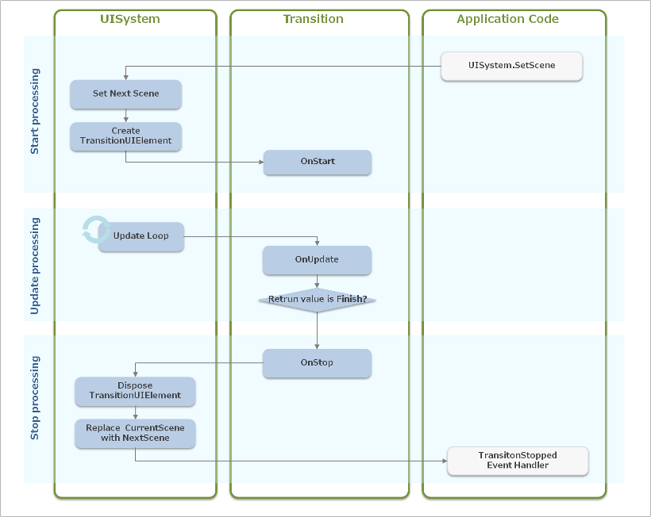

この章では、ユーザー独自のカスタムエフェクトを作成する方法を解説します。
UI Toolkit のソースコードも SDK に同梱されていますので、そちらも参考にしてください。
Contents
まず、Effect のライフサイクル(図1)について説明します。

図1 エフェクトのライフサイクル
Effect は下記の3つのステップに沿って処理が進められます。
1.開始処理
Effect の動作を開始させるには、Effect.Start メソッドを呼ぶ必要があります。 Effect.Start メソッド内では、以下の処理が行われます。
- UISystem に Effect を登録
- Effect.OnStart ハンドラの呼び出し
2.フレーム毎の処理
UISystem に Effect が登録されている場合、UISystem.Update メソッド内で下記の更新処理が行われます。
- Effect.OnUpdate ハンドラの呼び出し
- Effect.OnUpdate ハンドラの戻り値を判定と、終了処理(必要に応じて)
3.終了処理
Effect.OnUpdate の戻り値が Finish のとき、または、Effect.Stop メソッドが呼ばれた場合、下記の終了処理が行われます。
- Effect.OnStop ハンドラの呼び出し
- UISystem から Effect の登録を解除
- EffectStopped イベントの発行
開始処理のあと、描画が行われる前にフレームの更新処理が行われる場合と、一度描画された後にフレームの更新処理が行われる場合があります。前者は、Scene.OnUpdate メソッドや Widget.OnAnimation メソッドで Effect.Start メソッドが呼ばれた場合になります。また、後者は Effect.OnUpdate や Widget.Render メソッドで Effect.Start メソッドが呼ばれた場合になります。
カスタムエフェクトを作成するには、Effect クラスの派生クラスを作成し、以下のメソッドをオーバーライドする必要があります。
OnStart
カスタムエフェクトが UISystem に登録された後、初期化される際の処理を記述します。OnUpdate が実行される前に描画されても正常に描画されるように記述して下さい。OnUpdate
カスタムエフェクトの更新処理を記述します。フレーム毎に呼び出され、引数 elapsedTime には前回更新されてから経過した時間（ミリ秒）が格納されています。戻り値 TransitionUpdateResponse でエフェクトを継続(TransitionUpdateResponse.Continue)するか終了(TransitionUpdateResponse.Finish)するかを指定する必要があります。OnStop
カスタムエフェクトの終了時の処理を記述します。エフェクトを途中で終了させても正常な状態で終了するように記述して下さい。
IsPlaying プロパティ
OnStart が呼ばれて、現在アニメーション中かどうかを表すプロパティです。Widget プロパティ
エフェクトの対象となるウィジェットを保持します。Effect クラスを使ってバックグラウンドで何らかの処理をさせる場合など、必ずしも使用する必要はありません。 複数の Widget を対象する、UIElement を対象にする場合などは、別途プロパティを定義して下さい。TotalElapsedTime プロパティ
OnStart が呼ばれてから現在までの経過時間（ミリ秒）を保持しています。EffectStopped イベントハンドラ
OnStop が呼ばれた際に呼ばれるイベントハンドラです
Effect とほぼ同様のライフサイクルになります(図2)。
図2 トランジションのライフサイクル
1.開始処理
UISystem.SetScene メソッドが呼び出されると、以下の処理が行われます。 - UISystem に Transition を登録される - NextScene に遷移先の Scene がセットされる - CurrentScene と NextScene にイベントを配信しないように設定（scene.IgnoreEvent プロパティに true を設定) - Transition.OnStart メソッドが呼ばれる2.フレーム毎の処理
UISystem.SetScene が呼び出された後、UISystem.Update メソッド内で以下の処理が行われます。 - Transition.OnUpdate が呼ばれる - Transition.OnUpdate の戻り値を判定し、終了なら終了処理を行う3.終了処理
Transition.OnUpdate の戻り値が TransitionUpdateResponse.Finish のとき、または、別の画面が SetScene された場合は以下の処理が行われます。 - Transition.OnStop メソッドが呼ばれる - CurrentScene に NextScene を設定する - CurrentScene へのイベント配信再開 - UISystem からその Transition が登録解除される - TransitionStopped イベントを発行する
カスタムトランジションを作成するには、Transition クラスの派生クラスを作成し、以下のメソッドをオーバーライドする必要があります。
OnStart
カスタムトランジションを開始する際の処理を記述します。必要に応じてトランジションの更新処理中の描画順序を指定します。描画順序は TransitionDrawOrder 列挙体で指定することが可能です。OnUpdate
カスタムトランジションの更新処理を記述します。引数 elapsedTime は前回の Update からの経過時間（ミリ秒）を保持しています。戻り値でトランジションを継続(TransitionUpdateResponse.Update)するか終了(TransitionUpdateResponse.Finish)するかを指定する必要があります。OnStop
カスタムトランジションを停止させる際の処理を記述します。トランジションを途中で終了させても正常な状態で終了するように記述して下さい。
通常は一つの Scene しか表示することはできませんが、Transition の更新処理が実行されている際は CurrentScene（遷移元のシーン）、NextScene（遷移先のシーン）、TransitionUIElement を表示することが可能です。
TransitionUIElement プロパティ
Transition 実行中にのみ使用できる遷移元・遷移先のどちらのシーンにも属さない RootUIElement です。Transition の更新処理中にのみ、ある UIElement を描画したいときはこの TransitionUIElement の子要素として追加してください。例えば、遷移元や遷移先のシーンをテクスチャ化して効果を与えたい場合などは、そのテクスチャを描画する UIElement を TransitonUIElement の子要素に追加して下さい。TransitionDrawOrder プロパティ
CurrentScene、NextScene、TransitionUIElement の３つの描画順序を設定するプロパティです。TransitionDrawOrder 列挙体で指定して下さい。TransitionStopped イベントハンドラ
画面遷移終了時(OnStop が呼ばれた時)に呼び出されるイベントハンドラです。
AnimationUtility に static な補間関数をいくつか用意しており、アニメーションなどに利用することが可能です。
以下に補間関数の使用例を示します。
widget.X = AnimationUtility.EaseOutQuadInterpolator(fromPosX, toPosX, time / totalTime);図3 に AnimationUtility の各補間関数を示します。

図3 AnimationUtilityの補間関数